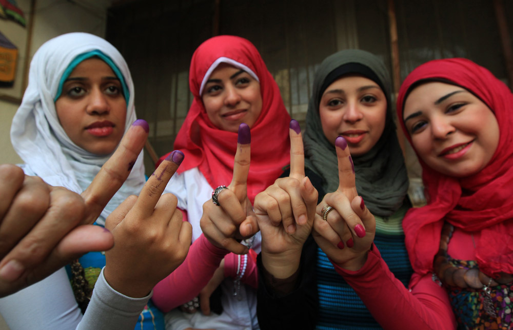
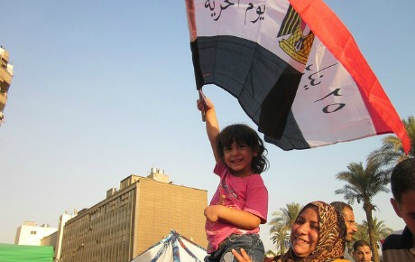

پذيرش > اخبار > اولین رییس جمهورمنتخب مصر، بیم ها و امیدها


 اولین رییس جمهورمنتخب مصر، بیم ها و امیدها اولین رییس جمهورمنتخب مصر، بیم ها و امیدها
11 تیر 1391 - بلا فرانک / ترجمه ژاله معصومی - نسخه قابل چاپ
تغییر برای برابری: رییس جمهور منتخب مصر روز یکشنبه در پیامی اعلام کرد که وی یک زن و یک مسیحی را بعنوان معاونان نخست وزیر انتخاب خواهد کرد. این پیام و همچنین سخنرانی تلوزیونی وی حاوی پیامی در مورد یک مصر متحد و حافظ حقوق همه ی شهروندانش از جمله اقلیت مسیحی و زنان بود. این موضوع که اخوان المسلمین چگونه مسیر خویش را بین سکولارها، سلفی ها و نظامیگران هدایت و تعیین خواهد کرد سوالی است در پیش روی همه. اما همگان بر سر این موضوع توافق دارند که روز یکشنبه روزی تاریخی بود.
بسیاری از مصری هایی نیز که از نظر سیاسی فاصله زیادی با اخوان المسلمین دارند پس از هفته ها نگرانی از تاخیر در اعلام نتایج انتخابات و انحلال مجلس توسط نظامی ها، نفس راحتی کشیدند.
در انتخاب بین مورسی اخوان المسلمینی و احمد شفیق وزیر سابق مبارک، نفر دوم آلترناتیو بدتری به نظر می آمد. انتخاب مورسی قدمی در جهت فاصله گرفتن از نظامیان تلقی می شود. اگر چه هنوز مشخص نیست که مذاکرات بین اخوان المسلمین و ارتش به کجا خواهد انجامید و مورسی چه موضعی را در قبال عوامل رژیم سابق اتخاذ خواهد کرد.
شور و شعف در میدان تحریر
تظاهرات روز های جمعه و شنبه میدان تحریر جای خود را به صحنه های شادی داد. حتی کسانی که آرزوی دیدن رییس جمهور دیگری را داشتند به شور و شادی پرداختند. نادیا الاودی، خبرنگار، یکی از آنان بود. وی در بلاگ خود می نویسد که او از احساسات خویش غافلگیر شده است. علیرغم اینکه وی رای سفید در صندوق انداخته بود و نمی خواست هیچکدام از کاندیدا های دور دوم یعنی شفیق و مورسی در انتخابات برنده شوند، میلرزید و اشک شوق میریخت:
 برای من باور کردنی نبود که به هر حال پس از آنچه که بر این ملت و این کشور رفته است، رژیم سابق سرنگون شده است. آنان دیگر بر من و کشور من حکمرانی نخواهند کرد. سرنگونی رژیم سابق برنده شدن اخوان المسلمین را در پی داشت. اما این موضوع در آن لحظه برای من اهمیتی نداشت. من بی نهایت خوشحال بودم. برای من باور کردنی نبود که به هر حال پس از آنچه که بر این ملت و این کشور رفته است، رژیم سابق سرنگون شده است. آنان دیگر بر من و کشور من حکمرانی نخواهند کرد. سرنگونی رژیم سابق برنده شدن اخوان المسلمین را در پی داشت. اما این موضوع در آن لحظه برای من اهمیتی نداشت. من بی نهایت خوشحال بودم.
ابراهیم نگران نیست
جیهان ابراهیم یکی از آکتیویستهایی که در قیام علیه رژیم مبارک در سطح جهانی مشهور شد، نگرانی عمومی در سطح جهان نسبت به برنده شدن مورسی را بی پایه می داند. وی در تویتر خود نوشت که وی میتواند نگرانی مردم را نسبت به قابلیت مورسی در به ثمر رساندن اهداف انقلاب درک کند، اما وی واکنش مطبوعات بین المللی را پروپاگاندای رعب و وحشت می داند:
مورسی توانایی به ثمر رساندن اهداف انقلاب را ندارد ، اما "اسلامگرایی" وی آخرین چیزی است که مرا نگران می کند. جیجی ابراهیم سوسیالیست وعضو گروه سوسیالیستهای انقلابی تروتیسکیست است که نقش مهمی در بسیج مردم بر علیه مبارک بازی کرد.
صرفنظر از اختلاف نظر های من با اخوان المسلمین و مخالفت عمیق من با سیاست آنان من از باختن شفیق در انتخابات بسیار خوشحالم.

از استبداد به حکومت روحانیون
دالیا زیادت، بلاگ نویس و فعال حقوق بشر در مصاحبه ای با روزنامه مصری ، بیکیا مصر،از نگاه بدبینانه خویش می گوید. او معتقد است که سیستم استبدادی مصر با حکومت روحانیون جایگزین شده است. او اخطار می دهد که مبارزه برای احقاق حقوق زنان سخت تر خواهد شد. دالیا که رییس هیت مدیره سازمان غیر دولتی مرکز مطالعات توسعه ابن خلدون است، می گوید:
– من خیلی نگران هستم که آنها آزادی مرا سلب خواهند کرد، اما فکر می کنم که می توانم آنان را متوقف کنم. او می گوید به عنوان من یک انقلابی مبارک را سرنگون کردم.
بر اساس نظر سنجیهای مرکز تحقیقاتی پیو که در بهار گذشته صورت گرفت بسیاری از مصری ها معتقدند که دخالت اسلام در سیاست قوت گرفته است. 60 درصد مردم از پیروی قوانین کشوری از اصول قرآنی حمایت کردند در حالیکه 6 درصد مردم از نگاهی سکولار به قوانین حمایت بعمل آوردند. دلیله ذیدا نگران آن است که زنانی که چارچوبهای پدر سالارانه را زیر علامت سوال می برند با مشکلاتی مواجه خواهند شد. او معتقد است که اسلامگرایان هر گونه انتقادی به وضعیت زنان را انتقاد از مذهب تلقی خواهند کرد.
این موضوع به عنوان چالشی علیه خدا تلقی خواهد شد. این کار را مشکلتر خواهد کرد، به همین دلیل ما خیلی می ترسیم.
تعرضات وحشیگرانه جدید
علیرغم اینکه تعرضات و آزارهای جنسی در فضای عمومی مدتهای مدیدی است که زنان را به ستوه آورده ، شواهد زیادی دال بر آن است که این آزار و اذیتها در میدان تحریر شدت یافته است. همزمان با جشن و پایکوبی روز یکشنبه تعرضات جدیدی صورت گرفت. از جمله نادیا الاوادی مورد حمله قرار گرفت. اما وی موفق شد با کوبیدن بر سر مرد متجاوز و لگد زدن بر فاق پای وی او را متوقف کند. وی در بلاگ خود از این تعرض گزارش می دهد.
اما خبرنگار انگلیسی، ناتاشا اسمیت مورد تعرض وحشیانه قرر گرفت. مردانی لباسهای وی را پاره کرده و ویرا مورد تعرض جنسی قرار دادند. او جهت تهیه گزارش از حقوق زنان پس از انقلاب به مصر سفر کرده بود. این حمله شباهت زیادی به تجاوز به لارا لوگان در روز سرنگونی مبارک در تاریخ 11 فوریه در میدان تحریر داشت.
بر اساس تحقیقات مرکز مصری حقوق زنان که در سال 2008 صورت گرفت 85 درصد از زنان مصری و 98 درصد از زنان خارجی که از مصر دیدن کرده بودند مورد آزار و اذیت جنسی قرارگرفته اند. قرار است روز جمعه آینده تظاهرات جدیدی بر علیه تعرضات جنسی از سوی گروه فیس بوک "اقدام علیه تعرضات جنسی" سازماندهی شود.
منبع: تارنمای پرسپکتیو فمینیستی
عکس از: Wessan Deveny
ارسال به
بالاترین
،
توییتر
،
فریندفید
،
فیسبوک
در همين بخش :
 پروین ذبیحی برنده جایزه حقوق بشری سازمان غيردولتى اتريشى سودويند شد پروین ذبیحی برنده جایزه حقوق بشری سازمان غيردولتى اتريشى سودويند شد
پخش کارت پستال و بروشور در روز جهانی زن در تهران
تمدید زمان برای امضای بیانیهی جمعی از فعالان زن به مناسبت هشت مارس
مجوزی که در نطفه خفه شد
بیش از 2000 امضا در اعتراض به تبعیض های آموزشی به مجلس تحویل داده شد
ديگر بخش ها :
طرح یک میلیون امضا
|
مقالات
|
سایت نوشته ها
|
اخبار
|
گزارش كمپين
|
گفت و گو
|
علیه سکوت
|
كوچه به كوچه
|
نامه های شما
|
گزارش ویژه
|
گفتگو با اعضا
|
ویژه سالگرد کمپین
|
تصویر برابری
|
دل آرام علی
|
تریبون
|
مقالات
|
تاریخ شفاهی
|
خارج از چارچوب
|
کتابخانه
|
درباره کمپین
|
کمپین در شهرها
|
کمپین در بند
|
صدای تغییر
|
ویژه 22 خرداد
|
لایحه حمایت از خانواده
|
گالری
|
عشا مومنی
|
امیر یعقوبعلی
|
خدیجه مقدم
|
راحله عسگری زاده و نسیم خسروی
|
پروین اردلان،جلوه جواهری، مریم حسین خواه، ناهید کشاورز
|
زینب پیغمبرزاده
|
سعیده امین، سارا ایمانیان، محبوبه حسین زاده، ناهید کشاورز و همایون نامی
|
احترام شادفر
|
نسیم سرابندی زاده،فاطمه دهدشتی
|
وبلاگ مهمان
|
پرونده خرم آباد
|
دستگیری ها
|
مریم مالک
|
پرستو اللهیاری
|
مهرنوش اعتمادی
|
سمیه رشیدی
|
Other Languages
|
همراهان
|
«فراخوان کمپین ده روز با بهاره هدایت»
| English
|